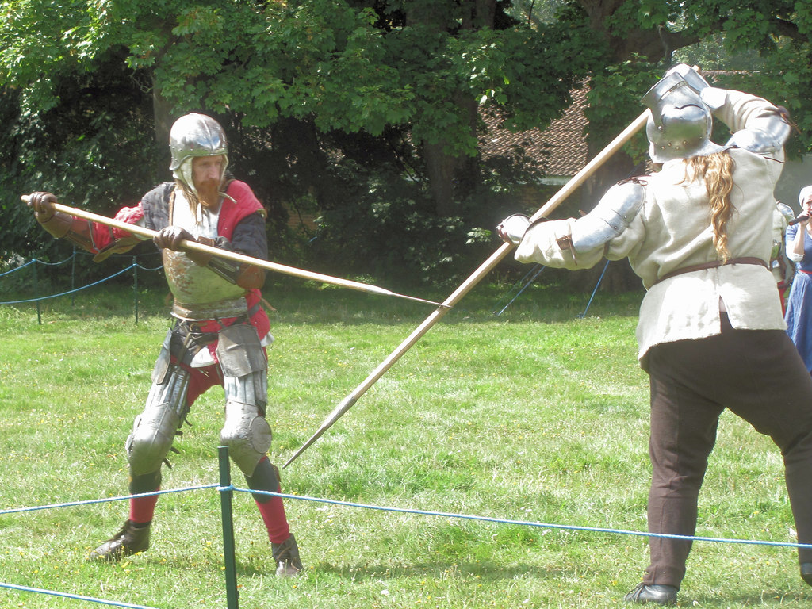
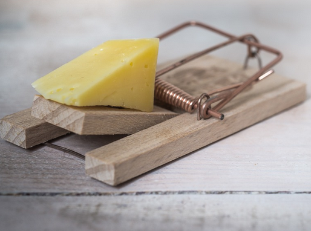

Poison Tipped Spears?!
There's more than one way to compete

Instead of growing faster, why not just stab your competitors? Even better, why not stab them with something covered in poison?
Believe it or not, this is exactly what some bacteria do, using something called the Type VI Secretion System (or T6SS for short). They grow reusable nano-harpoons which they use to poison any other bacteria that are nearby.
Q: Do you think this is an effective strategy?
Let's run a simulation where both species grow equally fast but one has a T6SS and see what happens.
The best offense is a good... offense?

It looks like having a T6SS is a winning strategy in this situation.
Q: What do you think the population graph looks like for this situation?
Go to the next slide to find out.
Quantifying the attack
Q: About how long did it take for their to be four times as many orange bacteria as green? AnswerBetween four and five hours
Q: When did the green bacteria fall to about 10% of the population? AnswerAround 6 hours (easier to see in relative abundance graph)
Q: Can you think of any times where this 'poison tipped spear' strategy would be a bad idea? AnswerThere's lots of possibilities. We'll talk about one in the next slide.
There ain't no such thing as a free lunch (TANSTAAFL)

One reason that a T6SS strategy won't always work has to do with a recurring theme in ecology: adaptations often have costs, so there's a trade-off. The previous simulation didn't make the 'stabbers' pay any cost.
In reality, the T6SS system takes energy (maybe a whole lot of energy) to maintain. That energy would otherwise go to growth, so the trade-off is 'be able to kill competitors, but grow slower.'
Q: What do you think would happen if having a T6SS harpoon meant growing 60% slower?
Let's see what happens when we simulate that.
Paying the trade-off: Simulation view

The T6SS doesn't seem to be a winning strategy if it costs too much.
Q: What, specifically, about growing faster is allowing the green bacteria to survive? HintRemember the T6SS uses tiny 'spears', so it only works when cells are close to each other.
Q: Do you think the population graph will show anything interesting? If so, what?
Curious about the 'floating' green bacteria near the end?🔍The simulation edges wrap around, so the 'floating' bit is actually part of the large green 'tower' which grew across the boundary.
Paying the trade-off: Population graph
Q: Do you notice anything interesting about which species was winning over time? AnswerIt seemed to go back and forth between orange and green bacteria.
Q: How long did it take for a clear winner to emerge? AnswerGreen became permanently dominant at about 15 hours.
Q: When did the losing bacteria reach a plateau in absolute abundance? AnswerOrange hit at around 11-12 hours.
Q: If orange hit a plateau at hour 11, then why did its relative abundance continue to drop? AnswerRelative abundance depends on the total number of bacteria. Since green kept growing, the relative abundance went down.
T6SS self check
Let's review: (hover your mouse over 'answer' to check yourself)
Q: Apart from growing fast, what's another way bacteria can compete?AnswerDirectly attacking, such as with a poison-tipped 'spear'
Q: Why isn't it realistic to think a competition strategy is always effective? AnswerMost strategies involve a trade-off, which is a common theme in ecology
Q: Why isn't stabbing and poisoning the competition always effective? AnswerIt requires growing slower, and competitors might be able to grow to outside of stabbing distance.
Q: Why isn't just growing fast the answer then? AnswerGrowing fast has its own trade-offs
Q: Is the winner of a competition always immediately apparent? AnswerNo, sometimes the dominant species changes over time.
Please proceed to the Experiment: Tipping Point section.